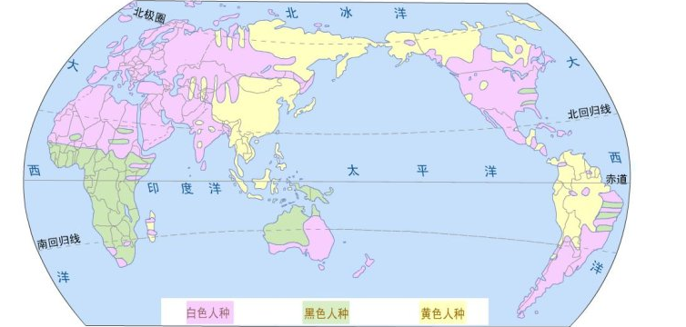

 世界人种分布图
一：民族是什么？
民族主义理论的经典之作《想象的共同体——民族主义的起源与散布》在谈论民族的概念与定义时，引用了一些学界对民族以及民族主义的既有看法：
同情民族主义的学者汤姆·奈伦在《不列颠的崩解》一书中如此写道：“‘民族主义’是现代历史发展中的病态。如同‘神经衰弱’之于个人一样的不可避免；它既带有与神经衰弱极类似的本质上的暧昧性，也同样有着退化成痴呆症的内在可能性——这个退化可能性乃是根源于世界上大多数地区所共同面临的无助的两难困境之中（这种痴呆症等于是社会的幼稚病），并且，在多数情况下是无药可医的”。
厄恩斯特·勒南则这样写道：“然而民族的本质在于每个人都会拥有许多共同的事物，同时每个人也都遗忘了许多事情”，这话有点费解，不过没关系，因为他紧跟着写道：“所有法兰西公民都必须已经遗忘圣巴托罗缪惨案与13世纪发生在南方的屠杀事件。在法国不到十个家族能够提供他们起源于法兰西人的证明......”。
厄恩斯特·盖尔纳在《思想与改变》中则如是说：“民族主义不是民族自我意识的觉醒：民族主义发明了原本并不存在的民族”。
在论及这些看法的同时，《想象的共同体》的作者本尼迪克特·安德森遵循着人类学的精神，给民族作了如下界定：“它是一种想象的政治共同体——并且，它是被想象为本质上有限的，同时也享有主权的共同体”。
民族是想象的，因为“即使是最小的民族的成员，也不可能认识他们大多数的同胞，和他们相遇，或者甚至听说过他们，然而，他们相互联结的意象却活在每一位成员的心中”。尽管作者认为民族是想象的，但是他并不赞同将其视为捏造（如盖尔纳那样），因为捏造暗示了有“真实”的共同体的存在，而作者认为“区别不同的共同体的基础，并非他们的虚假/真实性，而是他们被想象的方式”。
民族被想象为有限的，因为“没有任何一个民族会把自己想象为等同全人类”。
民族被想象为拥有主权，因为在启蒙运动与大革命的背景下，随着宗教与王朝的衰微，“民族于是被梦想着成为自由，并且，如果是在上帝管辖下，直接的自由。衡量这个自由的尺度与象征的就是主权国家”。
民族被想象为一个共同体，因为“尽管在每个民族内部可能存在普遍的不平等与剥削，民族总是被设想为一中深刻的，平等的同志爱。最终，正是这种友爱关系在过去两个世纪中，驱使数以百万计的人们甘愿为民族——这个有限的想象——去屠杀或从容赴死”。
那么，这种想象究竟如何在不超过两个世纪的时间内兴起并流布全球？又到底是什么原因使得这种想象竟能够激发起那么巨大的牺牲？这正是该书所探讨的主题。
二：民族意识的起源与中国
《想象的共同体》认为16世纪欧洲资本主义兴起背景下的印刷业的蓬勃发展是使民族共同体的想象成为可能的一个重要因素，而这个因素又受到了其他三个因素的进一步推动：拉丁文的神秘化、宗教改革运动、方言逐渐在行政系统中取得优势地位。
而印刷资本主义的发展对形成民族共同体的想象的作用主要表现为：印刷语言广泛传播创造了统一而有限的交流领域，改变了人们的同时性观念（从中世纪的“过去和未来汇聚于瞬息即逝的现在的同时性”到“对他人的稳定的、匿名的和同时进行的活动保有信心的同时性”）；印刷资本主义增强了语言的相对固定性；印刷资本主义创造了新的占据政治优势的语言。
这里的分析主要针对的是欧洲，就现代民族主义的文化根源在欧洲这点而言，这样做似乎也没有什么不妥。但是，如果考虑到中国独特的社会经济发展模式（16世纪的明朝是否存在资本主义的萌芽？或者说，其具体模式也许不应用西方的既有概念阐释？）、印刷业的持久发展（与欧洲中世纪书籍传播主要依靠手写不同，中国的印刷业至少远追隋唐）以及汉字是独立于读音的文字符号（相对于欧洲复杂多样而易于变化的拼音语言而言，汉语的稳定性特别突出）这些中国的具体情形，也许将民族意识以及民族主义起源的讨论局限于欧洲并不是最恰当的视角。
事实上，该书中译本吴叡人（也是译者）的导读中也提到，印度裔的美籍中国史专家芝加哥大学的杜赞奇（Prasenjit Duara）教授就认为“早在现代西方民族主义传入中国之前，中国人早就有类似于‘民族’的想象了；对于中国而言，崭新的事物不是‘民族’这个概念，而是西方的民族国家体系”。
三：印度支那的民族想象
想象的共同体》在论及东南亚民族主义兴起时谈到，法属印度支那尽管曾经作为一个整体被殖民统治，然而却并没有像同样由多族群组成的荷属印度尼西亚那样，最终发展出一个有力而统一的民族想象。如果说，印度支那的民族想象毕竟存在过的话，终究还是随着越南、柬埔寨、老挝等国各自的民族主义兴起而消亡。那么，印度支那的民族想象缘何而起，而又缘何而亡呢？
作者指出，两个主要因素促成了印度支那民族想象的成长：第一，法国殖民者试图打破印度支那与外部世界的既有的政治文化联系，比如消除中国、泰国等对印度支那殖民地的政治文化影响；第二，法国殖民者建立的统一的印度支那殖民地教育体系，为殖民地青年提供了一个教育的朝圣之旅。作者在书中屡次论及朝圣之旅对于形成民族想象的重要性，所谓朝圣之旅即指殖民地人民在行政体系或教育体系的金字塔结构中朝向顶点——通常被限制在殖民地的政治中心——辗转迁移的旅程，在这个旅程中，人们通过与不同背景的旅伴的同行，一起体验了对一个共同体的想象。
而对于印度支那民族想象的消亡，作者则作了如下的解释：第一，殖民地精英阶层在为子女寻求更多的好学校的入学名额时与殖民地的法国人产生了冲突，迫使法国殖民者创造了一个分开的但地位较低的双语教育体系。显然，在印度支那的不同地方，法语之外的另一种教育语言是各不相同的。这样原本统一的教育金字塔，逐渐被各地相互独立的较小的金字塔所取代，而统一的教育朝圣之旅也就瓦解了；第二，除法语之外，受过不同本地语言教育的青年日益增多；第三，教育的朝圣之旅和行政的朝圣之旅之间没有真正的重合，法国人始终给与了越南人更高的政治地位和更多的在整个殖民地区域内迁移任职的机会。也就是说，对于越南人之外的人来说，他们的行政朝圣之旅的顶点，要比他们的教育朝圣之旅的顶点来得低；第四，历史上越南人对高棉人等残酷入侵与占领，在民间留下了悲苦的记忆。
从以上的论述中，我们其实不仅可以获得对印度支那民族想象形成及消亡过程的理解，也可以体会到20世纪下半叶越南试图建立印度支那霸权的民族心理根源，毕竟一个越南人在其中占据优势的印度支那共同体的想象终究存在过。
四：爱国主义，历史宿命，语言想象
爱国主义，这种政治爱的性质可以从对其对象的语言描述中得到理解，比如带有亲族意味的词汇：祖国。也就是说，人们的爱国之情中蕴含着一种天生无法选择——比如出身的家庭——的宿命意味。尽管对社会学家来说，家庭是一种权力结构的看法已然并不新奇，但对于大多数人来说，家庭这种对个人来说无可选择的自然联系，总是意味着一种无私的爱与团结的领域。因此，家庭可以要求成员的无私牺牲，而一样具有宿命意味并常常比拟为亲族家庭的国家/民族自然也可以要求其成员自我牺牲。与此相对的是，人们为能够任意加入退出的组织付出的牺牲，往往不具有为国家/民族而牺牲那样的道德崇高性。其原因就在于，能够任意加入退出这个事实意味着成为这个组织成员的动机不够纯粹，即缺少一种无法逃避的必然性的装饰。
而语言，特别是广泛使用的延续久远的语言，通过将当代人与湮没于尘土的祖先联系起来，增强了国家/民族作为亲族的宿命意味，同时也经由人们共同吟唱的诗、歌，将人们联结到对一个共同体的想象之中。不过，语言在共同体想象形成过程中的重要作用也意味着，源自不同血缘的人群一样可以通过共同的语言想象着一个共同的祖先。实际上，民族就是用语言——而非血缘——构想出来的。
因此，历史的宿命以及经由语言想象这两个特点，使得民族既具有封闭的一面，也具有开放的一面。
五：被构建的手足相残
勒南在《民族是什么？》中写道：“然而，民族的本质是每个个人都会拥有许多共同的事物，而且同时每个个人也都遗忘了许多事情......每一个法兰西公民都必须要已经遗忘圣巴托罗缪惨案，还有13世纪南方的屠杀事件”。
《想象的共同体》的作者指出，这段话其实存在一个悖论，因为“勒南告诉他的读者们要‘已经遗忘’那些其实在他自己的话里面已经假设这些读者当然会记得的事”。那么，怎样理解这个怪异呢？
作者认为“圣巴托罗缪惨案”、“13世纪南方的屠杀事件”这种模糊了杀戮者与被杀戮者身份（或者说他们的对自己身份的认识）的措辞，本身表现了民族国家诞生后通过教育系统实施的将古老的悲剧事件遗忘/记忆成“家族史”中的手足相残的努力，而这归根结底乃是一种建构民族系谱的特有设计。显然，这种情况也并非法国所特有。美国人对南北内战的理解、英国人对“征服者”威廉的认识、西班牙人对内战的记忆等等，皆是如此。也就是说，不管这些悲剧的对立双方曾经如何看待他们的冲突，民族国家的公民们终究将这些斗争遗忘/记忆成了“我们的”内战。
“想象的共同体”这个名称指涉的不是什么“虚假意识”的产物，而是一种社会心理上的“社会事实”?